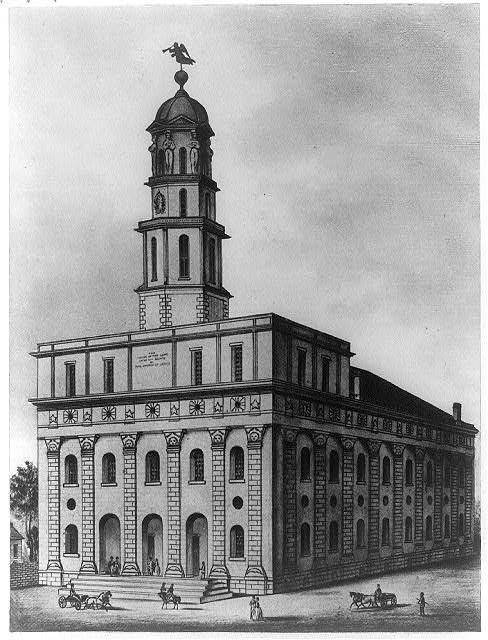

| Field | Detail |
| TOC Fit | Chapter 12 · Essay prompt 12.1 (The Second Great Awakening) |
| Why Here | A view of the massive limestone temple that the Latter-day Saints built at Nauvoo in the 1840s. Students can weigh what it shows about the size and ambition of a new church founded by a farm boy’s revelations, and what an image of a building cannot tell us about the believers who raised it. |
| Treatment | Public-domain image (no printed text) |
The Church of Jesus Christ of Latter Day Saints, organized by Joseph Smith in western New York in 1830, was one of the most successful of the new religions born in the Second Great Awakening. Driven from Ohio and then from Missouri, where the governor ordered in 1838 that Mormons be “exterminated or driven from the state,” some 5,000 Saints settled in 1839 at a bend of the Mississippi in Illinois and named their town Nauvoo. Under a generous state charter it grew within a few years into one of the largest cities in Illinois. Smith announced a revelation in 1841 calling for a temple, and church members donated money and every tenth day of labor to build it of local limestone. Its distinctive carved sunstones, moonstones, and starstones and its tall tower made it the most prominent building on the upper Mississippi. Smith was killed by a mob at Carthage, Illinois, in June 1844; the Saints finished the temple under Brigham Young, used it briefly in the winter of 1845–46, and then abandoned it as they began the trek west. An arsonist gutted it in 1848, and a tornado brought down most of its walls in 1850. Editorial note. The Norton Online Reader image could not be consulted for this reader, so the exact print Norton uses could not be confirmed. This entry uses the Library of Congress engraving catalogued as “[Mormon Temple at Nauvoo, Illinois. 184-],” an unattributed print of the 1840s that matches Norton’s title, date, and attribution. The Library of Congress record notes that its data come from an old caption card and are unverified; the engraver and the publication in which the print appeared are unknown. CAUTION: An idealized engraving may show the temple as finished and orderly; it was completed only in 1846, just as most Saints were leaving Nauvoo. |
|
 |
|
UNIT 3 · AN EXPANDING NATION | HISTORY B17A | DANIEL GARZA, M.A.
|